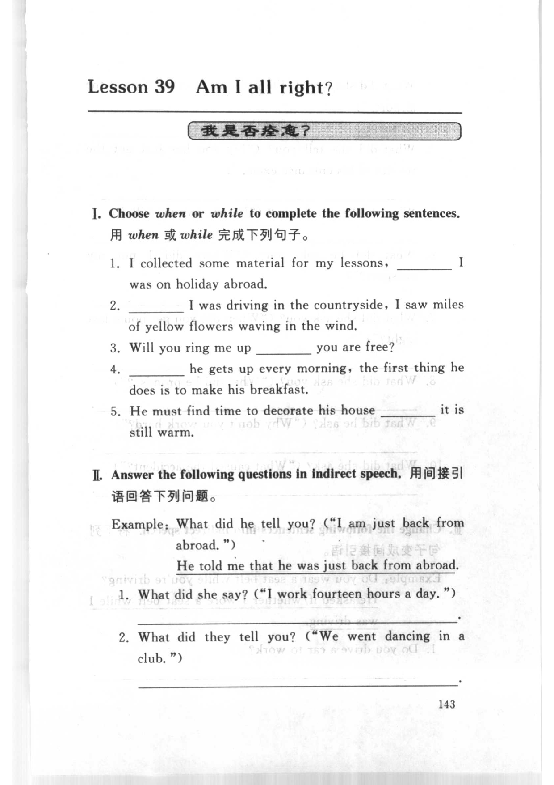
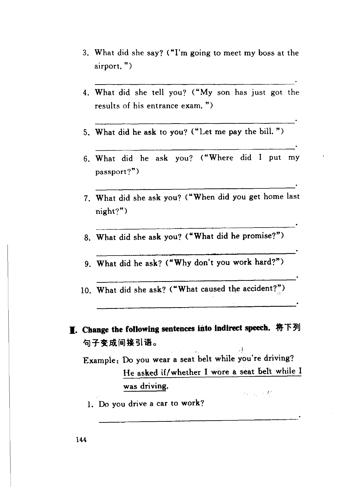
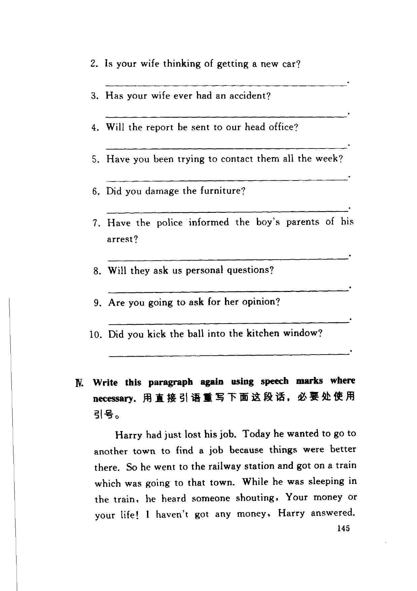
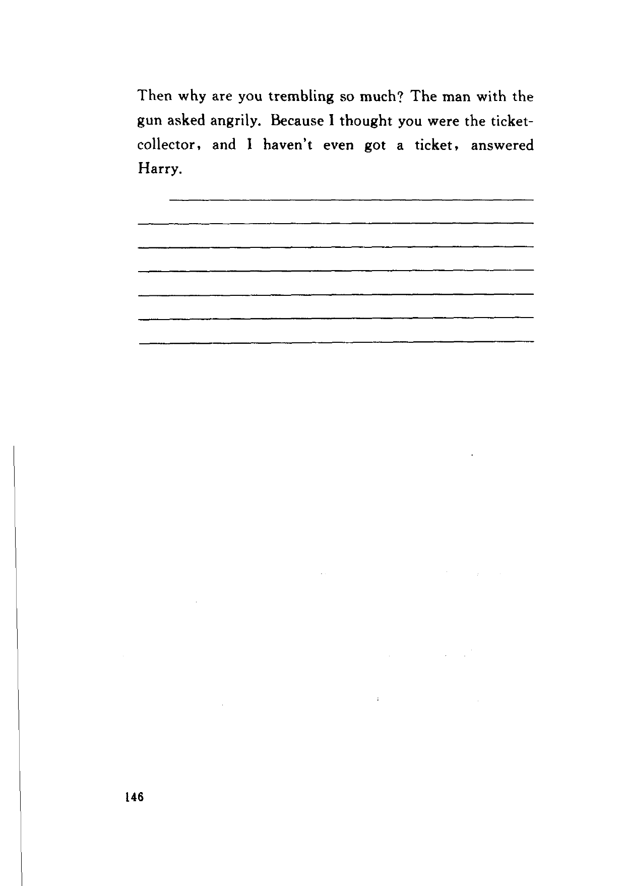

Grammar exercises · 语法练习
I. Choose when or while to complete the following sentences.
用 when 或 while 完成下列句子。
-
I. when / while — I collected some material for my lessons, I was on holiday abroad.
-
I. when / while — I was driving in the countryside, I saw miles of yellow flowers waving in the wind.
-
I. when / while — Will you ring me up you are free?
-
I. when / while — he gets up every morning, the first thing he does is to make his breakfast.
-
I. when / while — He must find time to decorate his house it is still warm.
II. Answer the following questions in indirect speech.
用间接引语回答下列问题。
Example: What did he tell you? ("I am just back from abroad.")
He told me that he was just back from abroad.
-
II. Indirect speech — What did she say? ("I work fourteen hours a day.")
-
II. Indirect speech — What did they tell you? ("We went dancing in a club.")
-
II. Indirect speech — What did she say? ("I'm going to meet my boss at the airport.")
-
II. Indirect speech — What did she tell you? ("My son has just got the results of his entrance exam.")
-
II. Indirect speech — What did he ask to you? ("Let me pay the bill.")
-
II. Indirect speech — What did he ask you? ("Where did I put my passport?")
-
II. Indirect speech — What did she ask you? ("When did you get home last night?")
-
II. Indirect speech — What did she ask you? ("What did he promise?")
-
II. Indirect speech — What did he ask? ("Why don't you work hard?")
-
II. Indirect speech — What did she ask? ("What caused the accident?")
III. Change the following sentences into indirect speech.
将下列句子变成间接引语。
Example: Do you wear a seat belt while you're driving?
He asked if/whether I wore a seat belt while I was driving.
-
III. Indirect speech — Do you drive a car to work?
-
III. Indirect speech — Is your wife thinking of getting a new car?
-
III. Indirect speech — Has your wife ever had an accident?
-
III. Indirect speech — Will the report be sent to our head office?
-
III. Indirect speech — Have you been trying to contact them all the week?
-
III. Indirect speech — Did you damage the furniture?
-
III. Indirect speech — Have the police informed the boy's parents of his arrest?
-
III. Indirect speech — Will they ask us personal questions?
-
III. Indirect speech — Are you going to ask for her opinion?
-
III. Indirect speech — Did you kick the ball into the kitchen window?
IV. Write this paragraph again using speech marks where necessary.
用直接引语重写下面这段话，必要处使用引号。
-
IV. Direct speech — Harry had just lost his job. Today he wanted to go to another town to find a job because things were better there. So he went to the railway station and got on a train which was going to that town. While he was sleeping in the train, he heard someone shouting, Your money or your life! I haven't got any money, Harry answered. Then why are you trembling so much? The man with the gun asked angrily. Because I thought you were the ticket-collector, and I haven't even got a ticket, answered Harry.
Original images · 原图对照
Expand a page to compare it with the transcription. Open the original in a new tab to zoom in.
展开原图核对文字，也可以在新标签页打开原图放大查看。
Book page 143 · Exercise I (when or while) and Exercise II (indirect speech, example and items 1–2)
Open original · 打开原图 ↗ Download original · 下载原图


Book page 144 · Exercise II (indirect speech, items 3–10) and Exercise III (change into indirect speech, example and item 1)
Open original · 打开原图 ↗ Download original · 下载原图


Book page 145 · Exercise III (change into indirect speech, items 2–10) and Exercise IV (direct speech, paragraph)
Open original · 打开原图 ↗ Download original · 下载原图


Book page 146 · Exercise IV (direct speech, answer lines)
Open original · 打开原图 ↗ Download original · 下载原图


Your notes and answers
Use this space for longer responses or exercises that do not have an individual answer box.